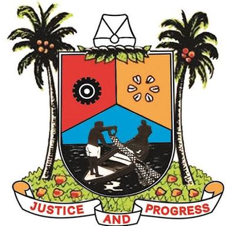
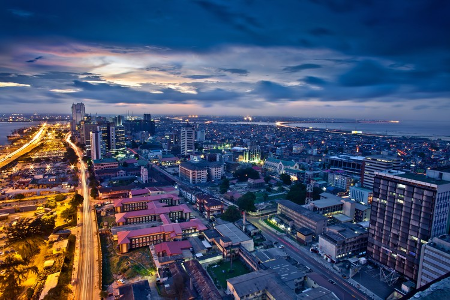
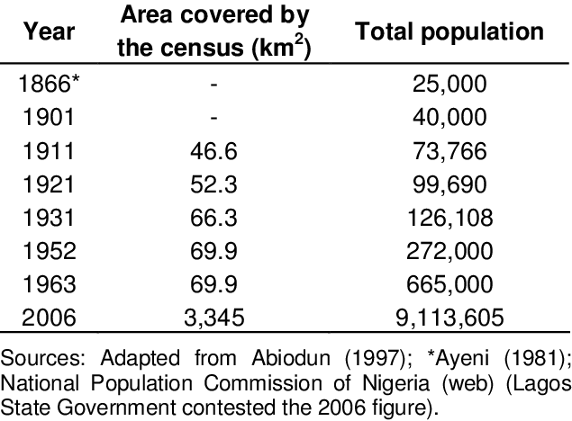

Lagos, Nigeria
Lagos, state, southwestern Nigeria, on the coast of the Bight of Benin. It is bounded by the state of Ogun to the north and east, by the Bight of Benin to the south, and by the Republic of Benin to the west. From 1914 to 1954 the area included in the state was administered by the British as part of the colony of Nigeria. The provisions of the 1954 constitution led to the creation of the Federal Territory of Lagos (the 27-square-mile [70-square-km] area of Lagos Island, including the city of Lagos) and to the transfer of the city’s hinterland to the administrative region of Western Nigeria. This arrangement restricted the expansion of Lagos city onto the mainland, however, and in 1967 the creation of Lagos state by the national government restored to the city sovereignty over its hinterland. The state’s mainly Yoruba population has grown more heterogeneous with the migration of other Nigerians and West Africans to Lagos city. Lagos state’s agricultural and fishing output includes cassava (manioc), palm oil and kernels, coconuts, corn (maize), vegetables, fruits, and fish. These products are collected in the lagoon ports of Badagry, Epe, and Ikorodu and shipped to markets in Lagos city. Because of the limited space available on the three islands that constitute central Lagos city, industry has been concentrated at estates both inside (Apapa, Ijora, and Yaba) and outside (Ikeja and Mushin) the city, while the central city has increasingly become a commercial, financial, transportation, and service centre. In response to the overcrowding and congestion of Lagos, the federal government selected a new capital site, Abuja, which replaced Lagos as the national capital in December 1991. The state government centred in Lagos city was shifted to Ikeja in 1976. Additional bridges and feeder roads have also been constructed from the central city to the mainland, and the ports at Apapa and Tin Can Island have been incorporated into the metropolitan area to reduce harbour congestion. Lagos state is served by a main line of the Nigerian Railways (which has its central yards in Lagos city) and the trunk highway system; Ikorodu, Mushin, and Ikeja are thereby linked to Lagos city. Epe, the state’s other major town, is served by secondary highways and is also a seaport. Lagos is served by Murtala Muhammed International Airport, located in Ikeja. Area 1,292 square miles (3,345 square km). Pop. (2006) 9,013,534.

Epe, Lagos
Epe, town and port, Lagos State, southwestern Nigeria; it lies on the north bank of the coastal Lagos Lagoon and has road connections to Ijebu-Ode and Ikorodu. A traditional settlement of the Ijebu people (a subgroup of the Yoruba), it was established by the mid-18th century as the chief port (slaves, cloth, agricultural produce) for Ijebu-Ode (17 mi [27 km] north-northwest), the capital of the Ijebu kingdom. It later served as the refuge for the forces of Kosoko, the Yoruba king ousted from Lagos (42 miles [68 km] west-southwest) by the British in 1851. In 1892 Epe was the embarkation point for the military expedition sent by Sir Gilbert Carter, the governor of Lagos, to defeat the awujale (the Ijebu political and spiritual ruler) at Ijebu-Ode. Modern Epe is a collecting point for the export of fish, cassava (manioc), corn (maize), green vegetables, coconuts, cocoa, palm produce, rubber, and firewood to Lagos. Special leaves useful in preserving kola nuts are trucked to Ijebu-Ode, Shagamu, and the other main kola-shipping towns. Epe is best known for its construction of the motorized, shallow-draft barges that navigate the coastal lagoons. Fishing is the major occupation. The town is served by secondary schools, several hospitals, and a health office. Pop. (2006) local government area, 181,409.

About Lagos
The Seal of Lagos State Government came into being by virtue of the Seal of Lagos State Government Law 2010 – “A Law to provide for the regulation on the use of the Seal of the Government of Lagos State as a symbol of State Authority and for other connected purposes”, as passed by the 6th Assembly, House of Assembly, Lagos State. The symbols on the Seal shall be of primary colours of Cyan, Magenta, Yellow and Black [“CMYK”] The descriptions of each symbol on the Seal are interpreted as follows: White Cap “Keremesi” – It denotes the symbol of authority common to most areas of the State Akoko Leaves – These signify longevity. It is universally used at the installation of Obas and Chiefs in Lagos State and all over Yorubaland Cowries – They signify the earliest medium of exchange in the State. The background indicates foreshore sands common to all parts of the State. Wheel – It signifies industry and the red background indicates flame generating power Fishing Activity – It denotes the traditional occupation of the people and inhabitants of State. Coconut Palm – This represents one of the main agricultural products of the State. Motto: Justice and Peace – “Justice” signifies the necessity in the State to give every man his due without fear or favour, affection or ill will while “Progress” signifies the hopes and aspiration of the people of State The Three lines – These represent the present, the past and the future.
Demograph
Lagos State is the smallest state in Nigeria yet, it has the highest urban population, which is 27.4 % of the national estimate [UN-Habitat]. According to the 2006 National Census, Lagos State has a population of 9,013,534 in relation to the National count of 140,003,542. However, based on the UN-Habitat and international development agencies’ estimates, Lagos State is said to have about 24.6 million inhabitants in 2015. Of this population, Metropolitan Lagos accounts for over 85% on an area that is 37% of the land area of the State, and the fact that Lagos population is growing 10 times faster than that of New York and Los Angeles, and more than the population of 32 African nations combined, the State population is expected to hit the 35 million mark in 2020.